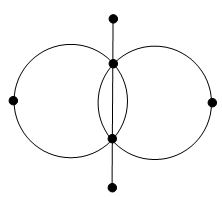

The metro of the city of Vaudeville consists of three lines and has at least two terminal stations and at least two interchange stations, and none of the terminal stations are interchange stations. You can get from each line to each of the others at least in two places. Draw an example of such a metro scheme, if you know that you can do this without taking the pencil off of the paper and by not drawing over the same line twice.
Do not forget that there are circle lines.
See the figure below.
